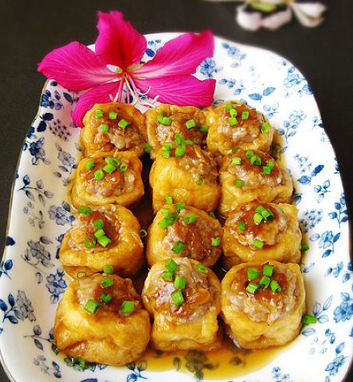
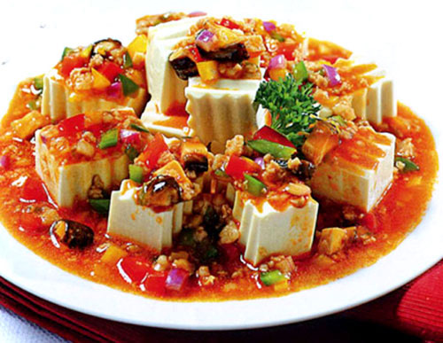
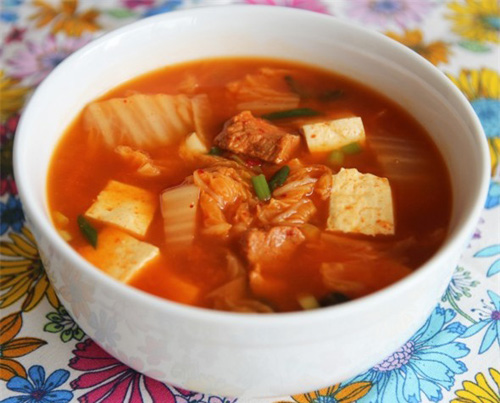
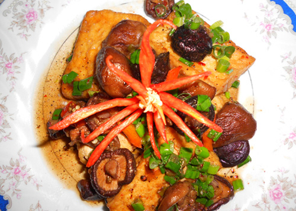

Các món ngon từ Đậu phụ
1. Đậu phụ nhồi thịt

Đậu phụ nhồi thịt rất ngon và bổ dưỡng.
Nguyên liệu:
- 200g thịt heo xay hoặc băm
- 100g đậu phụ chiên
- Hành, gừng
- 45ml nước tương
- Hạt nêm, đường, 1 thìa cafe bột ngô.
Cách làm:
- Băm nhỏ hành, gừng và cho vào tô đựng thịt.
- Thêm bột ngô, 1 thìa cafe hạt nêm và 15ml nước tương vào tô đựng thịt, trộn đều, ướp trong khoảng 15 phút.
- Chần sơ đậu qua nước sôi cho mềm, sau đó vắt khô rồi cắt một đường ở giữa miếng đậu.
- Nhồi thịt vào đậu.
- Pha nước xốt: bạn khuấy đều 30ml nước tương, bột bắp, và một ít nước lọc. Sau đó cho vào đĩa đậu hũ, hấp cách thủy khoảng 15 phút là được. Hoặc bạn có thể đun sôi nước xốt trong nồi riêng rồi sau khi hấp đậu bạn chan phần nước xốt lên cũng được.
2. Đậu phụ chiên sốt cà chua

Cách chế biến món ăn rất đơn giản mà ngon.
Nguyên liệu:
- 450g đậu phụ
- 5 quả cà chua cỡ trung bình
- 15g sốt cà chua (mua ở siêu thị)
- 5g muối, 10g đường
- 120ml nước và dầu để chiên
Cách làm:
- Đậu phụ cắt miếng vừa ăn, dùng giấy thấm khô. Sau đó cho đậu vào chảo dầu nóng chiên cho đến khi đến khi đậu có màu vàng nâu.
- Cà chua cắt miếng nhỏ.
- Cho tất cả các nguyên liệu đậu phụ, cà chua, muối, đường, sốt cà chua, nước, nước mắm vào nồi.
- Đậy vung, bật lửa lớn, đun sôi sau đó giảm bớt lửa nấu cho đến khi cà chua chín nhuyễn. Thêm gia vị nếu cần thiết.
- Rắc ít hành vào nồi rồi tắt bếp.
3. Canh kim chi đậu phụ

Canh kim chi đậu phụ
Nguyên liệu:
- Kim chi
- Thịt xay hoặc thịt ba chỉ
- Đậu phụ
- Lá hẹ, hành tím
Cách làm:
- Hành tím các bạn bóc vỏ đập dập, phi thơm, trút thịt vào xào săn, nêm gia vị cho đậm đà.
- Chế nước vào nồi thịt, nước sôi các bạn cho đến kim chi vào. Để món canh có vị chua chua dễ ăn các bạn nên sử dụng loại kim chi đã muối lâu và chua hơn bình thường.
- Đậu phụ xắt miếng mỏng, dày khoảng 1cm.
- Thả đậu vào nồi canh, canh sôi các bạn nêm nếm thêm một lần nữa xem độ mặn nhạt đã vừa chưa rồi rắc lá hẹ thái khúc vào và tắt bếp.
3. Đậu phụ kho nấm

Tuy đơn giản nhưng chắc chắn món đậu phụ kho nấm sẽ mang lại cảm giác ngon miệng cho bữa cơm nhà bạn.
Nguyên liệu:
- Đậu phụ: 2 bìa
- Nấm hương: 15 cái
- Hành lá
- Nước tương: 3 thìa
- Bột nêm: 1/2 thìa cà phê
- Đường: 1 thìa cà phê
Cách làm:
- Đậu phụ cắt miếng vừa ăn. Làm nóng dầu trong chảo rán đậu phụ vàng 2 mặt rồi lấy ra đĩa.
- Nấm hương rửa sạch, ngâm nở, cắt bỏ phần chân nấm, giữ lại phần nước nấm.
- Pha 3 thìa nước tương, 1 thìa đường, 1/2 thìa bột nêm cùng nước nấm sau đó đổ vào nồi đậu phụ cùng nấm đã được xào sơ.
- Đun nhỏ lửa cho đậu, nấm ngấm gia vị.
- Đun đến khi hỗn hợp sánh lại sền sệt thì tắt bếp, thêm hành lá đã thái nhỏ vào đảo đều. Như vậy là món đậu phụ kho nấm của bạn đã hoàn thành.
Gắp đậu phụ kho nấm ra đĩa dùng nóng!
4. Bún đậu mắm tôm
Món này ăn khi đậu vừa chiên xong là ngon nhất.
Nguyên liệu:
- Đậu mơ trắng: 10 miếng.
- Thịt chân giò, ba chỉ: 400g.
- Chả cốm: 300g
- Bún, mắm tôm ngon, ớt, chanh, đường, bột ngọt, dầu ăn; rau kinh giới, tía tô, dưa chuột.
Cách làm:
- Bắc chảo lên bếp, cho vào nhiều dầu, đợi dầu sôi già, thả đậu vào chiên. Chiên sao cho thật khéo trên lửa riu riu để đậu vàng ruộm, xốp và thơm.
- Khi đậu vàng, vớt ra, để ráo dầu.
- Thịt chân giò, ba chỉ luộc chín, xắt lát mỏng. Chả cốm rán vàng cắt miếng.
- Pha chế mắm tôm: Cho chút đường, chanh, bột ngọt vào mắm tôm, đánh bông lên, sau đó múc một thìa dầu nóng đổ vào bát mắm tôm cho ớt băm vào.
- Bày bún ra đĩa. Ăn bún với đậu, thịt ba chỉ, chân giò luộc, chả cốm, rau sống, dưa chuột, chấm mắm tôm. Món này ăn khi đậu vừa chiên xong là ngon nhất.
Chúng tôi vừa giới thiệu cho các bạn cách làm những món ăn ngon, hấp dẫn và đẹp mắt từ Đậu phụ, hy vọng các bà, các mẹ sẽ tạo ra những món đậu ngon hơn nữa. Xin chân thành cảm ơn!